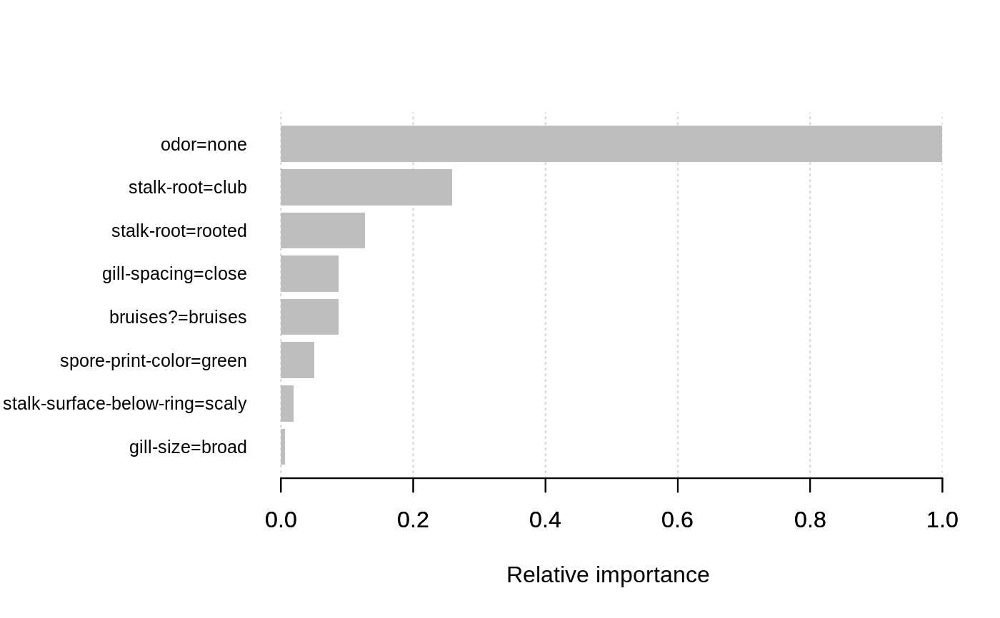

R/xgb.ggplot.R, R/xgb.plot.importance.R
xgb.plot.importance.RdRepresents previously calculated feature importance as a bar graph.
xgb.plot.importance uses base R graphics, while xgb.ggplot.importance uses the ggplot backend.
xgb.ggplot.importance(importance_matrix = NULL, top_n = NULL, measure = NULL, rel_to_first = FALSE, n_clusters = c(1:10), ...) xgb.plot.importance(importance_matrix = NULL, top_n = NULL, measure = NULL, rel_to_first = FALSE, left_margin = 10, cex = NULL, plot = TRUE, ...)
| importance_matrix | a |
|---|---|
| top_n | maximal number of top features to include into the plot. |
| measure | the name of importance measure to plot.
When |
| rel_to_first | whether importance values should be represented as relative to the highest ranked feature. See Details. |
| n_clusters | (ggplot only) a |
| ... | other parameters passed to |
| left_margin | (base R barplot) allows to adjust the left margin size to fit feature names.
When it is NULL, the existing |
| cex | (base R barplot) passed as |
| plot | (base R barplot) whether a barplot should be produced. If FALSE, only a data.table is returned. |
The xgb.plot.importance function creates a barplot (when plot=TRUE)
and silently returns a processed data.table with n_top features sorted by importance.
The xgb.ggplot.importance function returns a ggplot graph which could be customized afterwards.
E.g., to change the title of the graph, add + ggtitle("A GRAPH NAME") to the result.
The graph represents each feature as a horizontal bar of length proportional to the importance of a feature.
Features are shown ranked in a decreasing importance order.
It works for importances from both gblinear and gbtree models.
When rel_to_first = FALSE, the values would be plotted as they were in importance_matrix.
For gbtree model, that would mean being normalized to the total of 1
("what is feature's importance contribution relative to the whole model?").
For linear models, rel_to_first = FALSE would show actual values of the coefficients.
Setting rel_to_first = TRUE allows to see the picture from the perspective of
"what is feature's importance contribution relative to the most important feature?"
The ggplot-backend method also performs 1-D clustering of the importance values, with bar colors corresponding to different clusters that have somewhat similar importance values.
data(agaricus.train) bst <- xgboost(data = agaricus.train$data, label = agaricus.train$label, max_depth = 3, eta = 1, nthread = 2, nrounds = 2, objective = "binary:logistic")#> [1] train-error:0.014433 #> [2] train-error:0.001228importance_matrix <- xgb.importance(colnames(agaricus.train$data), model = bst) xgb.plot.importance(importance_matrix, rel_to_first = TRUE, xlab = "Relative importance")(gg <- xgb.ggplot.importance(importance_matrix, measure = "Frequency", rel_to_first = TRUE))#> Error: Ckmeans.1d.dp package is required#> Error in eval(expr, envir, enclos): object 'gg' not found